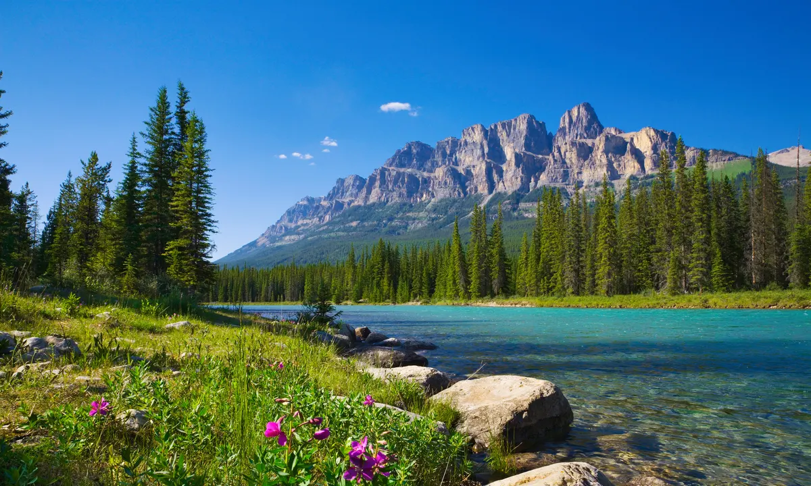

Bestemmingen in Canada
Quebec City

Quebec City, gelegen in de provincie Quebec in het oosten van Canada, is een van de oudste steden in Noord-Amerika en staat bekend om zijn rijke geschiedenis en Europese charme en architectuur. Quebec City's historische binnenstad is een 'UNESCO-werelderfgoedlocatie' en een van de best bewaarde koloniale steden in Noord-Amerika. Hier bevinden zich smalle straatjes met kleurrijke gebouwen en historische pleinen. In de winter is er het Quebec Winter Carnival, waar de inwoners feesten in de sneeuw. In de zomer het New France Festival, waar mensen zich kleden in historische kleding. Quebec heeft veel Franse kenmerken en heeft ook Frans als officiele taal.
Banff National Park
Van alle nationale parken in Canada is Banff de bekendste. Banff National Park, gelegen in de Canadese Rockies (Alberta), biedt adembenemende berglandschappen, velblauwe meren en genoeg mogelijkheden voor buitenactiviteiten zoals wandelen, skiën en wildlife kijken. Een van de meest iconische uitzichtpunten van Banff is het turquoise Lake Louise, omringd door hoge bergen en naaldbossen.
Niagara falls

De Niagara-watervallen zijn een van 's werelds meest iconische natuurlijke wonderen en trekken miljoenen bezoekers per jaar. Deze enorme watervallen bevinden zich op de grens van Canada en de Verenigde Staten, tussen de staat New-York en de provincie Ontario. De Niagara-watervallen bestaan eigenlijk uit drie hoofdwatervallen: de American Falls en de Bridal Veil Falls aan de Amerikaanse kant, en de grootste en meest herkenbare, de Horseshoe Falls, aan de Canadese kant. Deze watervallen zijn wereldberoemd vanwege hun grootte en krachtige stroming.